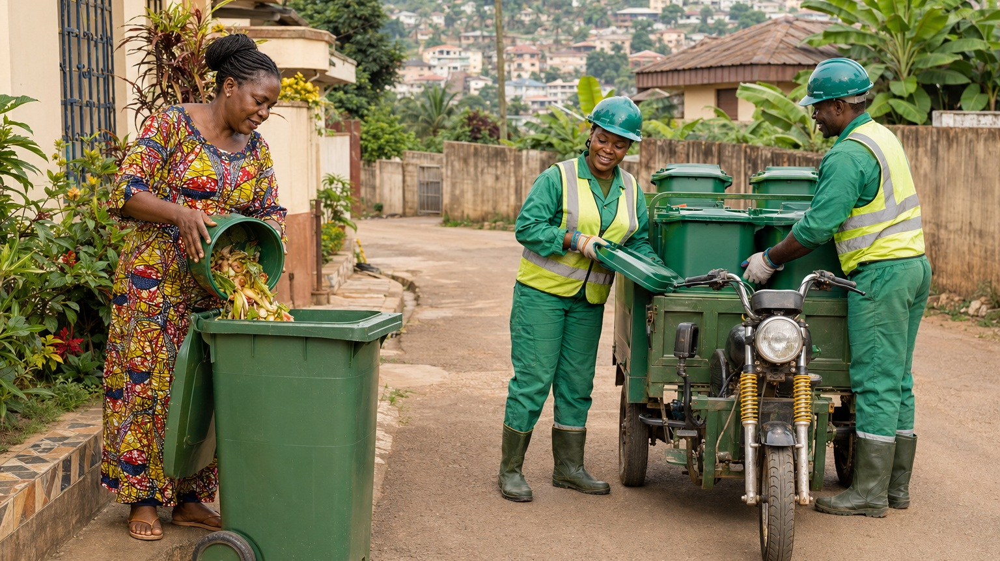
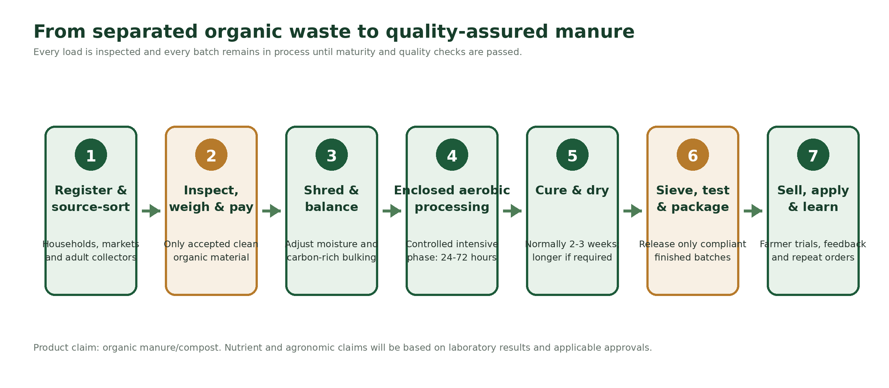
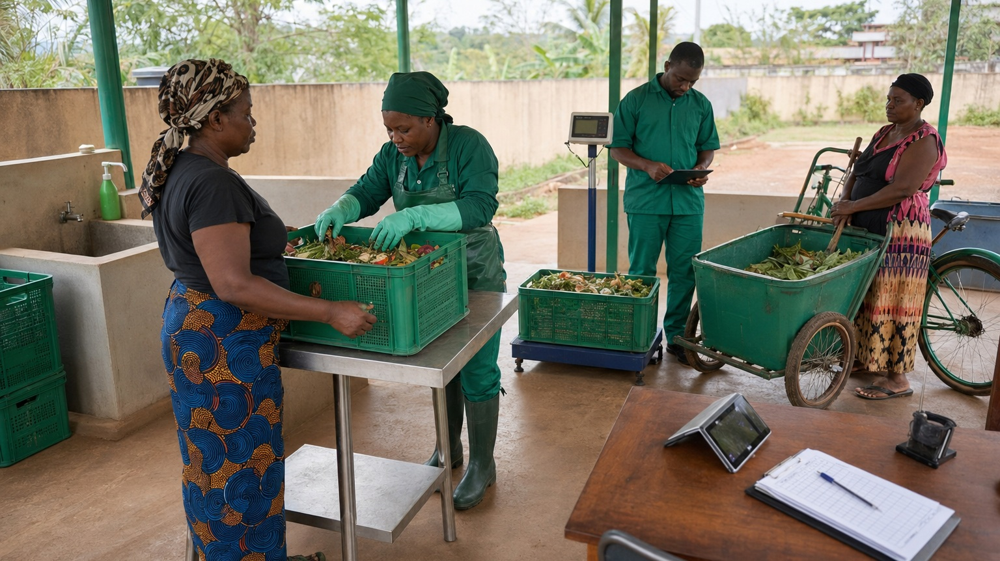
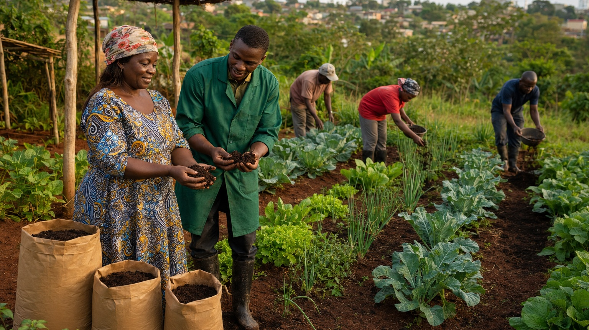

Cameroon Quality Tropical Fruits Processing & Transformation Initiative
PROJECT OVERVIEW
Cameroon is rich in natural resources and agricultural potential, yet up to 40% of fruit harvests are lost due to limited processing capacity and lack of structured value chains.
The Global Social Solutions Gateway (GSSoG) is addressing this challenge through the establishment of a modern agro-processing and packaging system that transforms locally grown fruits such as pineapples and mangoes into high-quality products for both local and international markets.
THE CHALLENGE
Despite strong agricultural output, many rural farmers lack access to markets, technology, and storage systems. This results in significant post-harvest losses and missed economic opportunities.
At the same time, global demand for tropical fruit products continues to rise, creating a gap between supply potential and market access.

WHO BENEFITS
300–500 women gain employment, training, and financial independence.
150–250 young people trained in agribusiness and technology.
30–50 persons with disabilities integrated into meaningful work.
2,000+ people benefit through improved livelihoods and food security.
SUSTAINABILITY
The project is designed as a long-term, self-sustaining system. Revenue generated from processed fruit sales is reinvested into community programs, expansion, and local development.
By promoting organic farming, reducing waste, and improving efficiency, the initiative ensures environmental sustainability while building economic resilience.
EXPECTED IMPACT
Reduction in post-harvest losses
Jobs created
Timeline for large-scale impact
OUR SECOND INITIATIVE
Turning clean organic waste into income, healthier soils and cleaner communities.
GSSoG is developing a community-scale circular-economy initiative that will purchase clean, source-separated organic waste, transform it into quality-assured organic manure, and connect the finished product to farmers, gardeners and cooperatives.
ABOUT THE INITIATIVE
Yaoundé generates a large and continuous stream of biodegradable household, market and food-business waste. When mixed with plastics, glass and other refuse, this material loses its value and contributes to unhealthy disposal sites, blocked drainage, greenhouse-gas emissions and avoidable municipal costs.
At the same time, many farmers need affordable soil amendments, while unemployed and low-income adults need dignified income opportunities. This initiative connects these challenges through one locally managed value chain.


OUR TECHNOLOGY
The system combines simple source separation with controlled processing and quality assurance. The 24–72-hour enclosed aerobic stage accelerates decomposition, but the material is then cured, dried and checked before it can be packaged or sold.
Fruit and vegetable scraps, market residues, food waste without packaging, coffee grounds, crop residues and approved untreated carbon-rich bulking materials.
Plastics, glass, metals, sanitary or medical waste, hazardous materials, chemically contaminated material and waste collected from mixed drains or landfill streams.
COMMUNITY INNOVATION
GSSoG will establish an organic-waste purchasing system. Households, markets, food businesses and registered adult collectors can bring clean biodegradable waste to approved collection points or sell through agreed routes. Every delivery will be inspected before payment.

Safeguards: Adults only; publicly posted prices; calibrated scales; traceable payments; protective equipment; safe routes; prohibited-material rules; and equitable access for women, youth, low-income residents and persons with disabilities.
EXPECTED IMPACT
At full operation, the pilot will combine measurable environmental gains with direct employment, paid waste-supply opportunities and practical support to local agriculture.

1 tonne of organic waste processed per operating day.
Up to 300 tonnes/year at steady state.
300–350 kg produced per day.
5–10 direct positions created.
At least 30 registered adults in Year 1.
50 farmers and 3 cooperatives in the demonstration programme.
FUNDING AND CONTACT
GSSoG is seeking FCFA 150 million to procure and commission the processing line, prepare the facility, strengthen collection and logistics, fund the first-year waste buy-back system, train operators and suppliers, conduct farmer demonstrations and establish reliable quality, monitoring and accountability systems.
Help GSSoG turn Yaoundé’s organic waste into cleaner neighbourhoods, income opportunities and healthier farmland. Partner with us to establish the pilot and build a model that can be responsibly replicated across Cameroon.
Photo-use note: All project photographs shown for this initiative are original illustrative concept images showing the intended operating model. They should not be presented as photographs of an already established site or procured equipment.
Help us transform agriculture into opportunity for communities in Cameroon.
Support This Project